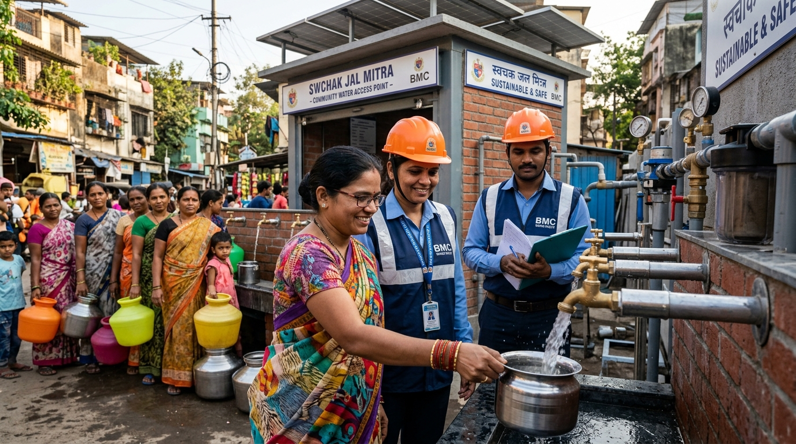

Authentic reflections, field perspectives, and methodologies straight from the researchers, data architects, and policy practitioners who make up Athena.

How we look past surface metrics to understand the human contexts, institutional incentives, and behavioral realities that numbers describe.

Unpacking blind spots in quantitative indicators and why local-language ground truth is essential for trustworthy policy insights.

Designing measurement frameworks that capture systemic ownership, equity nuances, and long-term institutional resilience.
Behind the scenes of our flat, multidisciplinary teams solving cross-sectoral development puzzles across timezones.

Connecting the lived experiences of vulnerable communities with macro-level policy design and digital architecture.

Why civic tech, open data standards, and interoperable architectures require sociological awareness to succeed at national scale.

Realities of citywide inclusive sanitation in rapidly growing secondary cities across East Africa and South Asia.

How pausing to listen to municipal utility operators transformed a failing deployment into a nationally adopted protocol.